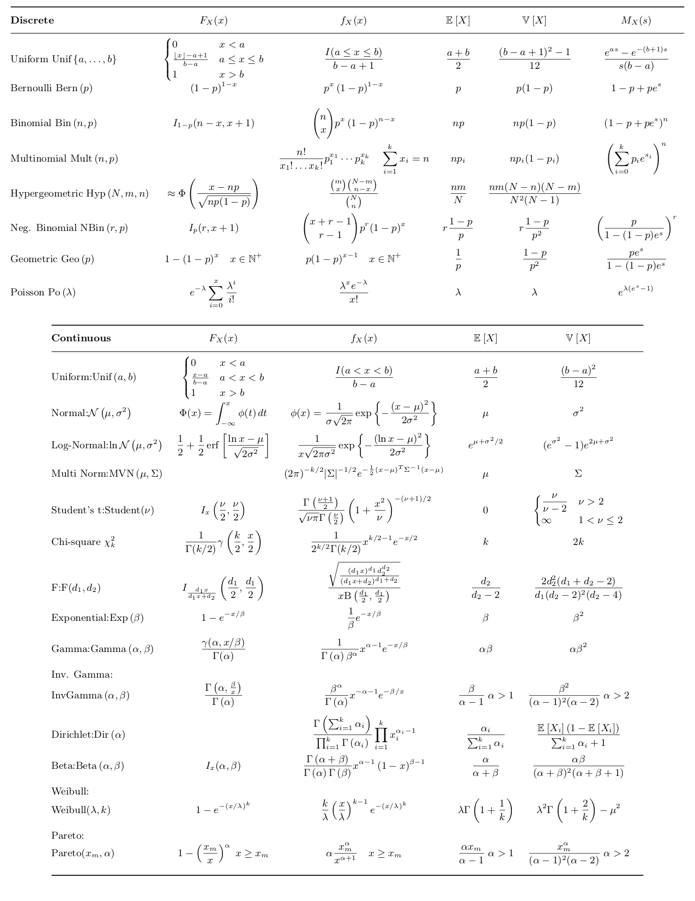
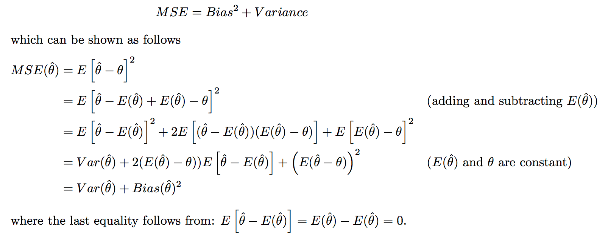

statistics
view markdownsome material based on probability and statistics cookbook by matthias vallentin
basics
- mutually exclusive: $P(AB)=0$
- independence $A \perp B$ means $P(AB) = P(A)P(B)$
-
conditional independence $A \perp B: :C$ means $P(AB\vert C) = P(A\vert C) P(B\vert C)$
-
-
conditional prob: $P(A B) = \frac{P(AB)}{P(B)} = \frac{P(B A)P(A)}{\sum P(B A)P(A)}$ (Bayes’ thm) - $E[X] = \int P(x)x dx$
- $E[h(X)] \approx h(E[X])$
- $V[X] = E[(x-\mu)^2] = E[x^2]-E[x]^2$
- for unbiased estimate, divide by n-1
- $V(X_1-X_2) = V(X_1) + V(X_2)$ if $X_1,X_2$ independent
- $V(a_1X_…+a_nX_n) = \sum_{i=1}^{n}\sum_{j=1}^{n}a_ia_jcov(X_i,X_j)$
- $V[h(X)] \approx h’(E[X])^2 V[X]$
- standard deviation - sqrt of variance
- standard error - error of the mean
- $Cov[X,Y] = E[(X-\mu_X)(Y-\mu_Y)] = E[XY]-E[X]E[Y]$
- $Cov(aX+bY,Z) = aCov(X,Z)+bCov(Y,Z)$
- $Corr(Y,X) = \rho = \frac{Cov(Y,X)}{s_xs_y}$
- $Corr(aX+b,cY+d) = Corr(X,Y)$ if a and c have same sign
- $R^2 = \rho^2$
- skewness = $E[(\frac{X-\mu}{\sigma})^3]$
-
law of total expectation: $E[X] = E_Y[E(X Y)]$ -
law of total variance: $V[Y] =\underbrace{E[V(Y X)]}_{\text{unexplained variance}} + \underbrace{V(E[Y X])}_{\text{explained variance}}$
error bars
- always write what you use
- standard dev
- standard error = standard dev / sqrt(n) = standard error of the mean when you’re estimating a mean
- 95% confidence interval = 2*standard error
- can get prediction intervals for on-line data using conformal prediction
- nonconformity measure - how unusual an examples looks relative to previous examples
inter-rater agreement
- cohen’s kappa - measures how well different raters agree (just taking fraction may be too simple, because they might agree by chance)
- from -1 to 1 (1 is perfect agreement)
- $\kappa = 1 - \frac{1 - p_o}{1-p_e}$ where $p_o$ is the relative observed agreement among raters (identical to accuracy), and $p_e$ is the hypothetical probability of chance agreement, using the observed data to calculate the probabilities of each observer randomly seeing each category
sample-size calculation
- how many samples must I collect?
inequalities
-
cauchy-schwarz: $ x \cdot y \leq x : y $ - $E[XY]^2 \leq E[X^2] E[Y^2]$
- triangle: $\vert \vert x + y \vert \vert \leq \vert \vert x \vert \vert + \vert \vert y \vert \vert$
- markov’s: $P(X \geq a) \leq \frac{E[X]}{a}$
- X is typically running time of the algorithm
- if we don’t have E[X], can use upper bound for E[X]
- chebyshev’s: $P(\vert X-\mu\vert \geq a) \leq \frac{Var[X]}{a^2}$
- utilizes the variance to get a better bound
- jensen’s: $f(E[X]) \leq E[f(X)]$ for convex $f$
moment-generating function
- $M_X(t) = E(e^{tX})$
- derivatives yield moments: $\frac{d^r}{dX^r}M_X (0) = E(X^r) $
- sometimes $\ln[M_x(t)]$ yields $\mu$ and $V(X)$
- $Y = aX+b \implies M_y(t) = e^{bt}M_x(at)$
- $Y = a_1X_1+a_2X_2 \implies M_Y(t) = M_{X_1}(a_1t)M_{X_2}(a_2t)$ if $X_i$ independent
- ordered statistics - variables $Y_i$ such that $Y_i$ is the ith smalless
distributions
- PMF: $f_X(x) = P(X=x)$
- PDF: $P(a \leq X \leq b) = \int_a^b f(x) dx$

- multivariate gaussian
- 2 parameterizations ($x \in \mathbb{R}^n$)
- canonical parameterization: \(p(x\vert\mu, \Sigma) = \frac{1}{(2\pi )^{n/2} \vert\Sigma\vert^{1/2}} \exp\left[ -\frac{1}{2} (x-\mu)^T \Sigma^{-1} (x-\mu) \right]\)
- moment parameterization: \(p(x\vert\eta, \Omega) = \text{exp}\left( a + \eta^T x - \frac{1}{2} x^T \Omega x\right)\) ~ also called information parameterization
- $\Omega = \Sigma^{-1}$
- $\eta = \Sigma^{-1} \mu$
- joint distr - split parameters into block matrices
- want to block diagonalize the matrix
- Schur complement of matrix M w.r.t. H: $M/H$
- $\mu = \begin{bmatrix} \mu_1 \ \mu_2 \end{bmatrix}$
- $\Sigma = \begin{bmatrix} \Sigma_{11} & \Sigma_{12}\ \Sigma_{21} & \Sigma_{22} \end{bmatrix}$
-
$p(x_1, x_2) = \underbrace{p(x_1 x_2)}{\text{conditional}}\cdot\underbrace{p(x_2)}{\text{marginal}}$
- marginal
- $\mu_2^m = \mu_2$
- $\Sigma_2^m = \Sigma_{22}$
- conditional
-
$\mu_{1 2}^c = \mu_1 + \Sigma_{12}\Sigma_{22}^{-1} (x_2 - \mu_2)$ -
$\Sigma_{1 2}^c = \Sigma_{11} - \Sigma_{12} \Sigma_{22}^{-1} \Sigma_{21}$
-
- 2 parameterizations ($x \in \mathbb{R}^n$)
law of large numbers
law of large numbers
- equivalent statements
- $ E(\bar{X}-\mu)^2 \to 0$ as $n \to \infty,$
- $ P(\vert\bar{X}-\mu\vert \geq \epsilon) \to 0$ as $n \to \infty$
- $T_o = X_1+…+X_n, E(T_o) = n\mu , V(T_o) = n\mu ^2$
- implications
- $E(\bar{X}) = \mu$
- $V(\bar{X}) = \frac{\sigma_x^2}{n}$
central limit thm
- 2 characterizations
- random samples have a normal distr. if n is large
- $lim_{n\to\infty}P(\frac{\bar{X}-\mu}{\sigma/\sqrt{n}}\leq z)=P(Z\leq z) = \Phi(z)$
- implications
- $X_1..X_n$ has approximately lognormal distribution if all $P(X_i>0)$
bias and point estimation
- point estimator $\hat{\theta}$ - statistic that predicts a parameter
- point estimate - single number prediction
- bias: $E(\hat{\theta}) - \theta$
- really nice example
- more complex models (more nonzero parameters) have lower bias, higher variance
- if high bias, train and test error will be very close (model isn’t complex enough)
- after unbiased we want MVUE (minimum variance unbiased estimator)
- need inductive inference property: must make prior assumptions in order to classify unseen instances
- define inductive bias of a learner as the set of additional assumptions B sufficient to justify its inductive inferences as deductive inferences
- bias types
- preference bias = search bias - models can search entire space (e.g. NN, decision tree)
- restriction bias = language bias - models that can’t express entire space (e.g. linear)
- consistent: $\hat{\theta_n} \to some : value$
- basically it converges to a number (can still be biased)
- bias/variance trade-off
- MSE - mean squared error - $E[(\hat{\theta}-\theta)^2]$ = $V(\hat{\theta})+[E(\hat{\theta})-\theta]^2$

- defs
- bias = approximation err
- variance = estimation err
- MSE - mean squared error - $E[(\hat{\theta}-\theta)^2]$ = $V(\hat{\theta})+[E(\hat{\theta})-\theta]^2$
- confidence intervals - take sample data + produce a range of values that likely contains population parameter you are interested in
- confidence interval of the prediction is a range that likely contains the mean value of the dependent variable given specific values of the independent variables - usually wider because it is one point, not a mean
- MLE example
- MLE - maximize likelihood $L(\theta) = p(X_1,…,X_n;\theta_1,…\theta_m)$ (the agreement with a chosen distribution)
- $\hat{\theta} = $argmax $ L(\theta)$
- $L(\theta)=P(X_1…X_n\vert\theta)=\prod_{i=1}^n P(X_i\vert\theta)$
- $log : L(\theta)= \ell(\theta) = \sum log P(X_i\vert\theta)$
- to maximize, set $\frac{\partial \ell (\theta)}{\partial \theta} = 0$
- fisher information $I(\theta)=V[\frac{\partial}{\partial\theta}ln(f[x;\theta])]$ (for n samples, multiply by n)
- higher info $\implies$ lower estimation error
overview - J. 5
- prob theory: given model $\theta$, infer data $X$
- statistics: given data $X$, infer model $\theta$
- 2 statistical schools of thought: Bayesian and frequentist
- Bayesian: $\overbrace{p(\theta \vert x)}^{\text{posterior}} = \frac{\overbrace{p(x\vert\theta)}^{\text{likelihood}} \overbrace{p(\theta)}^{\text{prior}}}{p(x)}$
- assumes $\theta$ is a RV, find its distr.
- prior probability $p(\theta)$= statistician’s uncertainty
-
posterior $p(\theta x)$ is what you don’t observe
-
- $\hat{\theta}_{Bayes} = \int \theta : p(\theta \vert x) d\theta$ ~ mean of the posterior
- $\hat{\theta}_{MAP} = \underset{\theta}{argmax} : p(\theta\vert x) = \underset{\theta}{argmax} : p(x\vert \theta) p(\theta) \\ = \underset{\theta}{argmax} : [ log : p(x\vert\theta) + log : p(\theta) ]$
- like penalized likelihood
- bayesians prefer whole distr. rather than parameter estimates
- frequentist - use estimators (ex. MLE)
- no prior - only use priors when they correspond to objective frequencies of observing values
- neyman / pearson
- $\hat{\theta}{MLE} = argmax\theta : p(x\vert\theta)$
-
really likelihood is whatever we model (ex. for discriminative models would be $p(y x, \theta)$)
-
- Bayesian: $\overbrace{p(\theta \vert x)}^{\text{posterior}} = \frac{\overbrace{p(x\vert\theta)}^{\text{likelihood}} \overbrace{p(\theta)}^{\text{prior}}}{p(x)}$
3 problems
- density estimation - given samples of X, estimate P(X)
- ex. univariate Gaussian density estimation
- frequentist
- derive MLE for mean and variance
- bayesian
- assume distr. for $\mu$
- ex. $p(\mu) \sim N(\mu_0, \tau^2)$
- derive MAP for mean and variance (assuming some prior)
- assume distr. for $\mu$
- can use plate to show repeated element
- frequentist
- ex. discrete, multinomial prob. distr.
- derive MLE
-
$P(x \theta) \sim $multionomial distr.
-
- derive MAP
- want to be able to plug in posterior as prior recursively
- this requires a Dirichlet prior to multiply the multinomial
- Dirichlet: $p(\theta) = C(\alpha) \theta_1^{\alpha_1 - 1}\cdot \cdot \cdot \theta_M^{\alpha_M-1}$
- derive MLE
- ex. mixture models - $p(x\vert\theta)=\sum_k \alpha_k f_k (x\vert\theta_k)$
- here $f_k$ represent densities (mixture components)
- $\alpha_k$ are weights (mixing proportions)
- can do inference on this - given x, figure out which cluster it fits into better
- learning requires EM
- can be used nonparametrically - mixture seive
- however, means are allowed to vary
- solving with random projection: project to low dim and keep track of means etc.
- ex. nonparametric density estimation
- ex. kernel density estimator - stacking up mass
- each point contributes a kernel function $k(x,x_n, \lambda)$
- $x_n$ is location, $\lambda$ is smoothing
- $\hat{p}(x) = \frac{1}{N}\sum_n k(x,x_n,\lambda)$
- nonparametric models sometimes called infinite-dimensional
- ex. univariate Gaussian density estimation
- regression - want $p(y \vert x)$
- conditional mixture model - variable z can be used to pick out regions of input space where different regression functions are used
- $p(y_n\vert x_n,\theta) = \sum_k p(y_n\vert z_n^k = 1, x_n, \theta) \cdot p(z_n^k=1\vert x_n,\theta)$
- nonparametric regression
- ex. kernel regression $\hat{f}(x) = \frac{\sum_{i=1}^N k(x, x_i) \cdot y_i}{\sum_{m=1}^N k(x, x_j)}$
- conditional mixture model - variable z can be used to pick out regions of input space where different regression functions are used
- classification
- ex. Gaussian class-conditional densities
- posterior probability is logistic function
- clustering - use mixture models
- ex. Gaussian class-conditional densities
model selection / averaging
- bayesian
- for model m, want to maximize $p(m\vert x) = \frac{p(x\vert m) p(m)}{p(x)}$
- usually, just take $m$ that maximizes $p(m\vert x)$
-
model averaging: $p(x_{new} x) = \int dm \int d\theta : p(x_{new} \theta, m) p(\theta x, m) p(m x)$ - otherwise integrate over $\theta, m$ - model averaging
- for model m, want to maximize $p(m\vert x) = \frac{p(x\vert m) p(m)}{p(x)}$
- frequentist
- can’t use MLE - will always prefer more complex models
- use some criteria such as KL-divergence, AIC, cross-validation